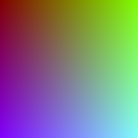
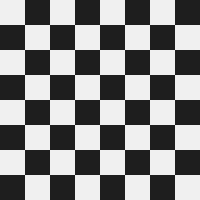
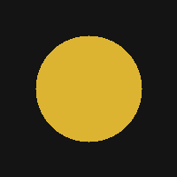
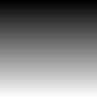
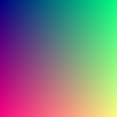
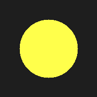
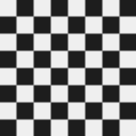
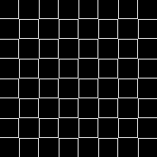
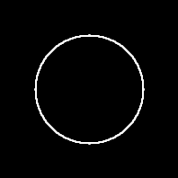

17 Image Processing with Tensors
An image is a tensor — a 3D array of shape [height width channels]. This chapter builds image processing tools using dtype-next tensors, element-wise el/ operations, and t/matrix for convolution kernels. All images are synthetic: no external files needed.
Since images are raw uint8 tensors (not RealTensors), we use dfn/ for element-wise arithmetic and dtt/select for channel extraction — these preserve the tensor shape.
(ns lalinea-book.image-processing
(:require
;; La Linea (https://github.com/scicloj/lalinea):
[scicloj.lalinea.tensor :as t]
[scicloj.lalinea.elementwise :as el]
;; dtype-next — element-wise ops on raw tensors:
[tech.v3.datatype :as dtype]
[tech.v3.datatype.functional :as dfn]
[tech.v3.tensor :as dtt]
;; Tensor <-> BufferedImage conversion:
[tech.v3.libs.buffered-image :as bufimg]
;; Visualization annotations (https://scicloj.github.io/kindly-noted/):
[scicloj.kindly.v4.kind :as kind]
;; Visualization helpers:
[scicloj.lalinea.vis :as vis]
[clojure.math :as math]))Synthetic test images
t/compute-tensor creates a tensor by calling a function at every position — the image equivalent of make-reader.
Color gradient
(def gradient
(t/compute-tensor [200 200 3]
(fn [r c ch]
(case (int ch)
0 (int (* 255 (/ r 200.0))) ;; red: top->bottom
1 (int (* 255 (/ c 200.0))) ;; green: left->right
2 128)) ;; blue: constant
:uint8))(bufimg/tensor->image gradient)
Checkerboard
(def checkerboard
(let [size 200 sq 25]
(t/compute-tensor [size size 3]
(fn [r c _ch]
(if (even? (+ (quot r sq) (quot c sq))) 240 30))
:uint8)))(bufimg/tensor->image checkerboard)
Circle on dark background
(def circle-img
(let [size 200 cx 100 cy 100 radius 60]
(t/compute-tensor [size size 3]
(fn [r c ch]
(let [dr (- r cy) dc (- c cx)
dist (math/sqrt (+ (* dr dr) (* dc dc)))]
(if (<= dist radius)
(case (int ch)
0 50 ;; dark red
1 180 ;; bright green
2 220) ;; bright blue
20))) ;; dark background
:uint8)))(bufimg/tensor->image circle-img)
Channel manipulation
Tensors support zero-copy slicing. t/select extracts a slice along any axis without copying data.
Extract individual channels
vis/extract-channel extracts one channel from an [h w 3] image and replicates it into a grayscale [h w 3] tensor.
(bufimg/tensor->image (vis/extract-channel gradient 0))
The red channel of the gradient increases top to bottom:
(let [ch (t/select gradient :all :all 0)]
[(int (ch 0 0))
(int (ch 199 0))])[0 253]Swap channels
Rearranging the last axis swaps colors:
(def swapped
(let [[h w _c] (t/shape gradient)]
(t/compute-tensor [h w 3]
(fn [r c ch]
;; Swap R<->B
(int (gradient r c (case (int ch) 0 2 2 0 ch))))
:uint8)))(bufimg/tensor->image swapped)
Brightness and contrast
dfn/ operations transform every pixel at once.
Brightness: multiply by a factor. We clamp to [0, 255] and cast back to :uint8.
(defn brighten [img factor]
(-> img
(dfn/* factor)
(dfn/max 0)
(dfn/min 255)
(dtype/elemwise-cast :uint8)))(bufimg/tensor->image (brighten circle-img 1.5))
Grayscale via weighted channel sum
Converting RGB to grayscale is a weighted sum:
\(\text{gray} = 0.299 R + 0.587 G + 0.114 B\)
We extract each channel with dtt/select (zero-copy view) and combine with dfn/ arithmetic.
(defn to-grayscale [img]
(let [r (dtt/select img :all :all 0)
g (dtt/select img :all :all 1)
b (dtt/select img :all :all 2)]
(dfn/+ (dfn/* r 0.299)
(dfn/* g 0.587)
(dfn/* b 0.114))))(bufimg/tensor->image (vis/matrix->gray-image (to-grayscale gradient)))Convolution kernels
Image convolution slides a small matrix (kernel) over the image, computing a weighted sum at each position.
Kernel definitions
(def blur-kernel
(el/scale (t/matrix [[1 1 1] [1 1 1] [1 1 1]]) (/ 1.0 9.0)))(def sharpen-kernel
(t/matrix [[0 -1 0]
[-1 5 -1]
[0 -1 0]]))(def edge-kernel
(t/matrix [[-1 -1 -1]
[-1 8 -1]
[-1 -1 -1]]))Edge detection kernels sum to zero (no DC response):
(el/sum edge-kernel)0.0Applying a kernel
For each kernel position (dr, dc), we shift the image by that offset and multiply by the kernel weight. The sum over all offsets gives the convolution. Each shifted view is a zero-copy dtt/select with a range — no raw arrays needed.
(defn apply-kernel [gray-2d kernel]
(let [[h w] (dtype/shape gray-2d)
[kh kw] (t/shape kernel)
oh (- h kh -1)
ow (- w kw -1)]
(reduce
(fn [acc [dr dc]]
(let [weight (double (kernel dr dc))
shifted (dtt/select gray-2d
(range dr (+ dr oh))
(range dc (+ dc ow)))]
(dtype/clone (dfn/+ acc (dfn/* shifted weight)))))
(dtype/clone (dtt/compute-tensor [oh ow] (fn [_ _] 0.0) :float64))
(for [dr (range kh) dc (range kw)]
[dr dc]))))Box blur
(bufimg/tensor->image
(vis/matrix->gray-image
(apply-kernel (to-grayscale checkerboard) blur-kernel)))
Edge detection
Edges in the checkerboard appear at the transitions between light and dark squares:
(bufimg/tensor->image
(vis/matrix->gray-image
(apply-kernel (to-grayscale checkerboard) edge-kernel)))
Sobel edge detection
The Sobel operator computes horizontal and vertical gradients separately, then combines them:
\(G = \sqrt{G_x^2 + G_y^2}\)
Since apply-kernel does the heavy lifting, the Sobel function is just composition:
(def sobel-x
(t/matrix [[-1 0 1] [-2 0 2] [-1 0 1]]))(def sobel-y
(t/matrix [[-1 -2 -1] [0 0 0] [1 2 1]]))(defn sobel-edges [gray-2d]
(let [gx (apply-kernel gray-2d sobel-x)
gy (apply-kernel gray-2d sobel-y)]
(dfn/sqrt (dfn/+ (dfn/sq gx) (dfn/sq gy)))))(bufimg/tensor->image
(vis/matrix->gray-image
(sobel-edges (to-grayscale circle-img))))